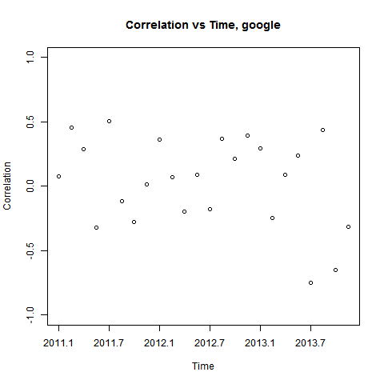

Google Trends vs. Stock Performance
Shuheng Dai, Sang Lee, Rudolf Pham, Shanna Su, Jinmyung Yoo
Method
Our goal is to explore longitudinal trends in the stock market by using keyword frequencies to discover differences among various companies listed on the U.S. stock market using a time period of roughly three years from January 1, 2011 to November 30, 2013. Keywords for the companies, seen in the table below, were determined by web-scraping company profiles from well-known media such as Wall Street Journal, CNN, Reuters, and BusinessWeek, and, using R, we identified semantically related keywords and ranked them in order of frequent usage. Google Trends was used to mine data on frequency of search terms, and Yahoo! Finance was used to mine stock price data.
| Industry | Company Name | Keywords |
|---|---|---|
| Hot Tech |
|
|
| Specialty Eatery |
|
|
| Auto Manufacturing |
|
|
| Fashion |
|
|
Individual Companies
We discovered that there were cases in which a company’s most frequently searched keyword was that company’s name. Some of these companies include The Gap, Google, and Starbucks. As seen in the graph below, there seems to be a positive correlation between Google’s stock prices and the search counts for its company name “google." This suggests that there is a positive correlation between a company’s stock market prices and the search counts of the company’s name, which may be due to increasing popularity of the companies' products.
On the other hand, we found that keywords that show positive correlations are not always the companies' names; industry-related terms are also well reflected on stock prices. For example, the keywords “fashion" for Steve Madden, “apparel" for Gap, “YouTube" for Google, and “coffee" for Starbucks all show positive correlations between stock prices and search counts, as seen in the plot for Steve Madden displayed below. The reason for this trend may be due to the fact that the industries that these companies belong to are becoming more and more popular and the companies themselves are growing. As a result, the search counts for industry-related keywords increase due to rising interest, and more people buy the companies' stocks, bringing the prices higher.
Furthermore, the correlations between the keywords and corresponding companies' stock performances are not all positive. There are negative correlations for the keywords of GM, Ford, and Facebook over the three years. This is evident in the graph for GM and its keyword “chevrolet," and the negative correlation in this case may be explained by the downturn in the U.S. auto industry that has taken place over the past few years. Since the financial crisis of 2007-08, falling sales and market shares have resulted in the Big Three's plants' underperformance, leading to production cuts, plant closures and layoffs. This trend continued until 2012 when GM and Ford continued to lose market shares as their sales went down.
There are also cases in which the correlation between the keyword and stock price is weak or nonexistent. An example can be in the keyword “Coach" actually correlates weakly with Coach’s stock prices.
Industry Comparison
To better understand the effects of media exposure on a company’s stock performance, we examined the differences across industries due to the differing nature of various businesses. We then compiled the correlations between each company’s stock performances and media exposure effects for the four different industries and created a bar chart below that shows the average correlation values among each industry.
As can be seen, clothing and eatery companies have the strongest correlation of approximately 0.30 between media exposure and stock performance. This is then followed by the tech industry with a correlation of roughly 0.24. Finally, the auto industry’s stocks stay indifferent of their media presence with a correlation coefficient < 0.1.
Taking the average lag between stock price and online searches into account, it seems that industries react differently to social media. The graph below illustrates the mean lag time (in number of days) for different industries when averaging the responses in +- 10 days. As we can see from the bar chart, tech firms' stock prices move ahead of social media, while eateries, automobile manufacturers and clothing companies' stocks respond to social media with slight delays.
The trend in lag indeed reinforces the belief that technology companies are coming back post the dot-com bubble of 2000.
Longitudinal Findings
Since the Internet has been taking on a more integral role in people’s lives, it would be interesting to examine if there are any differences across time. After normalizing both the stock price and search number to 100, most companies' stock prices (indicated by red lines) tend to move together with search numbers (indicated by black lines) of a company’s most unique and relevant key word with a lag in time. Google demonstrates the most closely correlated trend over time.
However, this is not always the case, as Tesla shows. This company's graph stands out, as the stock performance and search diverge after May 2013. This divergence is a possible indication that Tesla’s stock skyrocketed without any real gain for its investors.
It is still difficult to predict future stock performance solely based on the correlations. To better understand the time effect, we divide time into smaller units and analyze the correlation over time. If time does not play a role, then in each smaller unit where the effect of time is reduced, we should still observe consistent correlation between stock price and search counts.

In the graph above, we used intervals of 30 days and plotted the correlations as data points, and then drew the correlations for each single period in one graph. According to the graph, there is no specific pattern in the distribution of correlations, which shows that stock performance and media exposure lack a strong significant relation with one another. More plausibly, the positive correlation between stock price and search count is the result of them both increasing over time.
Volume Impact
Transaction volume may possibly have better correlation with media exposure compared to stock price because it has no direction.

In the graph above, transaction volume is indicated by the red line while the black line shows search numbers after normalizing to 100 for both axes. There is no identifiable pattern across time (due to many large spikes in volume and search numbers) and the trading volume is far more volatile compared to media exposure. The result shows that a stock’s daily transaction volume is not closely related to the company’s media exposure.
Conclusion
The search frequencies track what the stock prices could be. Our results suggest that, following this logic, Google Trends searches query volumes for certain terms that could have been used in the construction of profitable trading strategies. Where there are increases in search volume for certain company related terms, there were increases or decreases in stock prices for the respective companies as well. Whether the stock prices would increase or decrease can be determined within the context of the company conditions and economy itself—there are many factors and background information that could give more detailed insights about the companies' futures and we cannot predict, with 100% accuracy, the future stock prices solely from the search counts. Therefore, we could make the assumption that if there are some drops and peaks in search frequencies, then it is likely that there will be changes in stock prices.